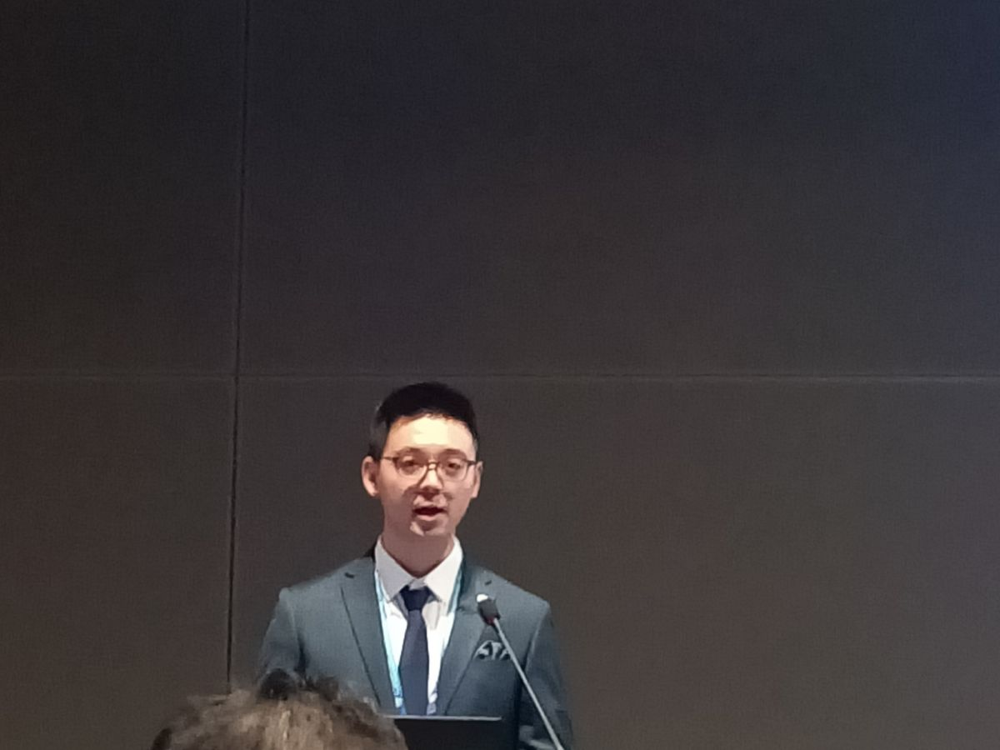
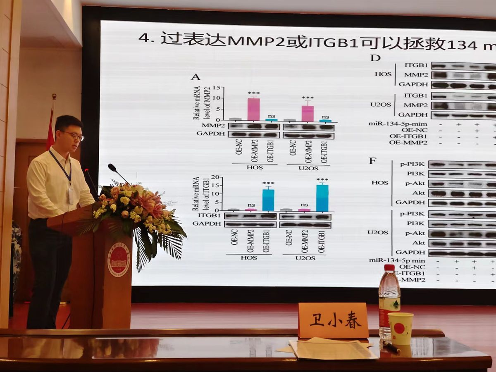
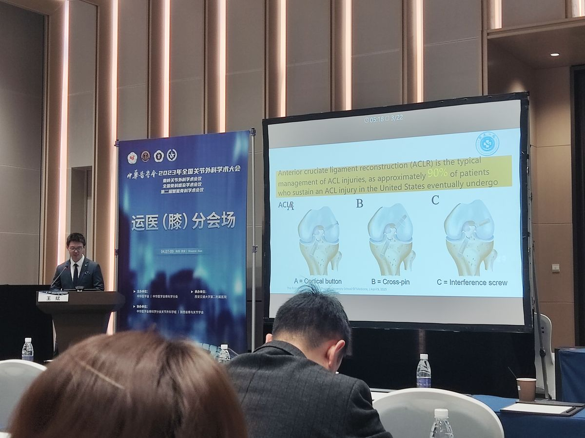

Lei Yan
Lei Yan (Chinese: 闫磊) is a Chinese physician-scientist and PhD candidate in Biomedical Engineering at the Johns Hopkins University School of Medicine, where he works in the laboratory of Professor Xu Cao. Trained in clinical medicine and orthopaedics at Shanxi Medical University, he studies how the annulus fibrosus of the intervertebral disc responds to spinal instability and how those changes relate to low back pain.
He has published 45 peer-reviewed papers, 39 of them in SCI-indexed journals and 21 as first, co-first or corresponding author. His work has appeared in The BMJ, JAMA Network Open and Nature Communications.
Early life and education
Yan was born in Shanxi, China. In 2016 he entered the integrated "5+3" clinical medicine programme at Shanxi Medical University, receiving his MB in 2021. He then trained in orthopaedics at the Second Hospital of Shanxi Medical University under Professor Zhi Lv, completing standardised residency training alongside his master's research, and graduated with an MMed in 2024, ranked first in his department. During this period he also worked with Professor Bin Wang's group at the First Affiliated Hospital of Zhejiang University School of Medicine.
In August 2024 he joined Professor Xu Cao's laboratory at Johns Hopkins, beginning the PhD in Biomedical Engineering that September.
| Years | Institution | Degree |
|---|---|---|
| 2024 – present | Johns Hopkins University School of Medicine | PhD candidate, Biomedical Engineering |
| 2021 – 2024 | Second Hospital of Shanxi Medical University | MMed, Orthopaedics |
| 2016 – 2021 | Shanxi Medical University | MB, Clinical Medicine |
Research
Annulus fibrosus and low back pain
Low back pain is the leading cause of years lived with disability worldwide; it affected an estimated 619 million people in 2020, and that number is projected to exceed 800 million by 2050.[1] Most cases have no specific diagnosis, and degeneration of the intervertebral disc is the main structural correlate. Yan's doctoral work uses a mouse model of lumbar spine instability to study how annulus fibrosus cells, their extracellular matrix and the nerves that reach them change as the disc degenerates, and how these changes relate to pain behaviour. The work combines genetic mouse models, lineage tracing, confocal and three-dimensional imaging, primary cell culture and behavioural testing.
Evidence in musculoskeletal care
Yan has also led clinical evidence studies on osteoarthritis, joint replacement, ligament reconstruction and lumbar fusion. The largest, published in The BMJ in 2025, compared exercise modalities for knee osteoarthritis across 217 randomised trials and 15,684 participants; it was selected by ACP Journal Club and covered by CNN.
Selected publications
† equal contribution; * corresponding author. Full list of 45 publications.
- Yan L†, Li D†, Xing D†, … Hu Y*, Ge L*, Wang B* (2025). "Comparative efficacy and safety of exercise modalities in knee osteoarthritis: systematic review and network meta-analysis." The BMJ 391: e085242. doi:10.1136/bmj-2025-085242
- Yan L†, Ge L†, Dong S, … Xing D*, Wang B* (2023). "Evaluation of comparative efficacy and safety of surgical approaches for total hip arthroplasty." JAMA Network Open 6(1): e2253942. doi:10.1001/jamanetworkopen.2022.53942
- Yan L†, Li D†, Li S†, … Liu W*, Du Y*, Wang B* (2024). "Exosomes derived from 3D-cultured MSCs alleviate knee osteoarthritis by promoting M2 macrophage polarization." Chemical Engineering Journal 497: 154432. doi:10.1016/j.cej.2024.154432
- Yan L†, Zhou R†, Feng Y†, … Sun X*, Lv Z*, Tian Z* (2024). "MiR-134-5p inhibits the malignant phenotypes of osteosarcoma via ITGB1/MMP2/PI3K/Akt pathway." Cell Death Discovery 10: 193. doi:10.1038/s41420-024-01946-z
- Li R†, Yan L†, Jiu J, … Wang B* (2024). "PSME2 offers value as a biomarker of M1 macrophage infiltration in pan-cancer and inhibits osteosarcoma malignant phenotypes." International Journal of Biological Sciences 20(4): 1452–1470. doi:10.7150/ijbs.90226
- Pan D, Shen M, … Yan L, … Cao X* (2026). "Dorsal horn DCC amplification loop induced by endplate osteoclasts generates chronic nociplastic low back pain in male mice." Nature Communications 17: 8631. doi:10.1038/s41467-026-75423-9
Patents and software
- Utility model patent (China): arthroscopic measurement device for anterior cruciate ligament reconstruction, CN 224776837 U, granted 2026 (co-inventor).
- Software copyright (China): deep-learning radiographic diagnosis system for knee osteoarthritis V1.0, 2023SR1629906 (co-developer).
- Software copyright (China): machine-learning self-assessment system for knee osteoarthritis V1.0, 2024SR0602654 (co-developer).
Academic service
- Handling editor, Frontiers journals.
- Peer reviewer for 23 journals in 2026 (32 manuscripts), including International Journal of Nanomedicine, BMC Musculoskeletal Disorders, Frontiers in Immunology, Osteoporosis International, Maturitas and Research.
Awards and honours
| Year | Award | Awarding body |
|---|---|---|
| 2024 | Youth May Fourth Medal | Shanxi Medical University |
| 2024 | Outstanding Graduate, ranked first | Shanxi Medical University |
| 2023 | National Scholarship for Graduate Students | Ministry of Education of China |
| 2023 | University Student of the Year | Shanxi Medical University |
| 2020 | Gold Award, "Internet+" Innovation and Entrepreneurship Competition (project leader) | Shanxi Province |
Conference presentations
Yan has given eight podium talks and seventeen poster presentations at national and international meetings, including the Chinese Orthopaedic Association annual congress, the annual congress of the Chinese Association of Orthopaedic Surgeons, and the 2026 OARSI World Congress on Osteoarthritis.



References
- GBD 2021 Low Back Pain Collaborators (2023). "Global, regional, and national burden of low back pain, 1990–2020, its attributable risk factors, and projections to 2050." The Lancet Rheumatology 5(6): e316–e329. doi:10.1016/S2665-9913(23)00098-X
External links
- Email: lyan22@jh.edu
- Google Scholar profile
- ORCID 0000-0001-5154-8656
- Department of Biomedical Engineering, Johns Hopkins University School of Medicine, Baltimore, Maryland, USA